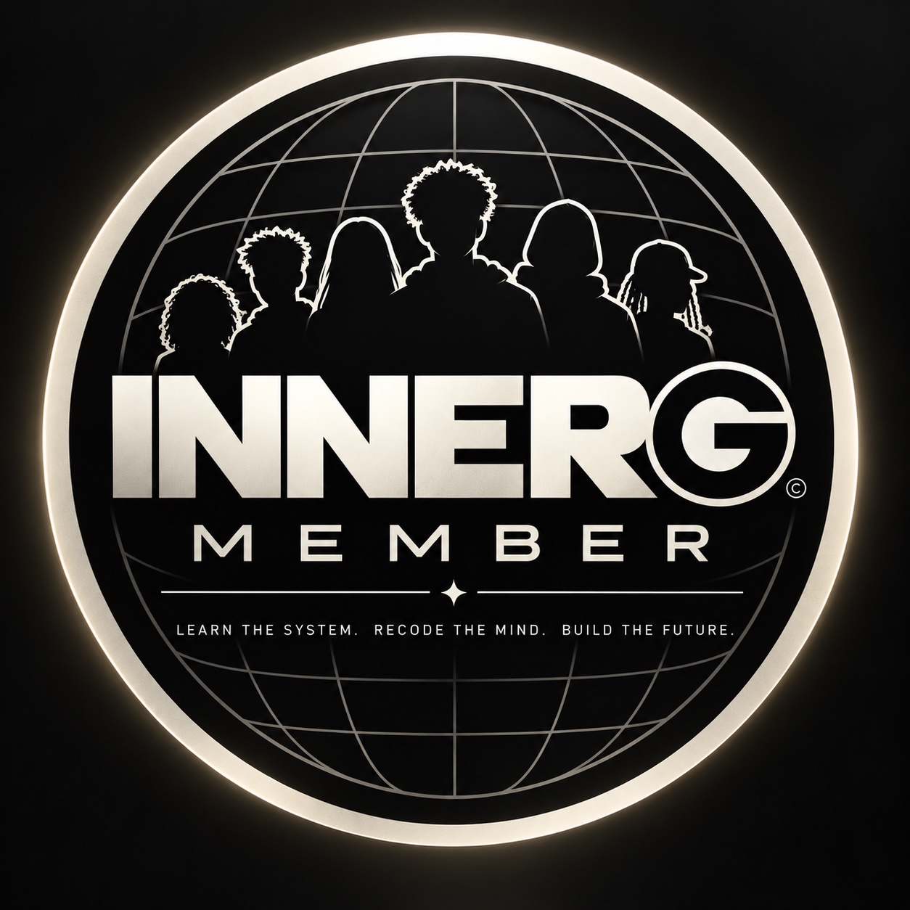

learn the system.
study the rules, incentives, risks, gatekeepers, and opportunities before they cost you something.

INNERG INTELa learning and ownership system built by nasirr g. mayo.
in plain words: innerg teaches people, young and grown, how the systems around them work, how to think for themselves, and how to use what they learn to build something they own.
understand the systems around you. examine the ideas operating inside you. use what you learn to build something useful.
this is the method behind the books, market education, technology lessons, creative work, and community.
study the rules, incentives, risks, gatekeepers, and opportunities before they cost you something.
question what shaped your decisions. verify information. strengthen your ability to think for yourself.
turn knowledge into action. make the offer, publish the work, improve the system, or create something you own.
school is one place your child learns. it cannot be the only one. innerg is a family program with two curricula: one for students in grades 3 through 12 and a separate one for parents. the whole family can sign up and learn side by side, each with their own lessons.
the student curriculum and lessons, built for grades 3 through 12 on the three steps: understand how the systems around them work, check information before believing it, and turn ideas into real work.
the world is changing faster than many classrooms. children who understand the systems around them, and can think for themselves, are harder to mislead and better prepared to build.
your own parent curriculum and lessons, separate from your child's and made for parents. same three steps, applied to your life and work. learning at the same time keeps you in the conversation.
no jargon. here is the whole picture.
innerg covers several subjects, but every part returns to the same purpose: clearer thinking, useful action, and ownership.
the tools can support the work. they cannot do the work for you.
people enter through different interests. each door connects learning to ownership.
explore the public work first, on your own or with your child. if you want the full member experience, five one-time seven-day trials open each sunday.